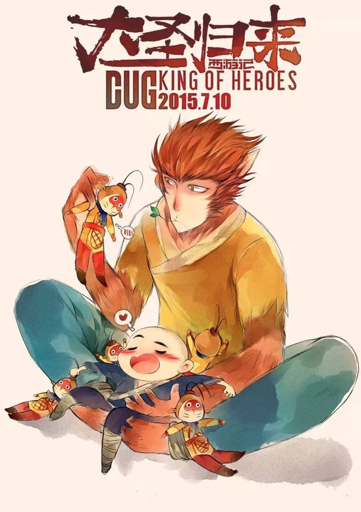

About
Themonkey
We all need a hero to look up to, to give us hope and courage when it is needed.
700
No.
Get "He’s never dead."
About
Themonkey
We all need a hero to look up to, to give us hope and courage when it is needed.
700
No.
Get "He’s never dead."
“He’s never dead, he’s just fallen asleep.”《大圣归来》(Monkey King: Hero is Back)从上映至今已实现了无数屠榜奇迹，连外国人都禁不住天朝影迷狂热的安利——他开创了国产电影新时代，创造了口碑神话，不过外国人到底怎样看他的呢。
我们都需要一位英雄供我们敬仰，给予我们希望，激励众生。我们听着他的传奇、他的冒险、他英雄式的丰功伟绩一路成长。让一名英雄变得名副其实，并不是他在拥有力量的时候会助人为乐，而是即使手无缚鸡之力，他也有勇气站出来对抗邪恶。
Chinese dream chasers trying to keep the beacon of hope lit even though being in the most unfavorable situations.
好评-------88.5%
还行-------10.0%
一般-------01.5%
Hero is come back.
大圣归来,英雄的传奇故事,百看不厌.....................................ice
90min的电影,情节紧凑,全程笑点泪点贯穿..................miro
一部认真的动画电影,每一分一秒都匠心别具.............Judy
K
You
are the hero
Thanks for your come back, wake up us
冰蓝深海，猴子沉入水底。无能为力，大圣落魄，剥除齐天之名，只是区区一介石头蹦出的普通猴子罢了。那从冰冷的河中伸出的小手...
”一代人的英雄
燃《西游记之大圣归来》 是根据中国传统神话故事《西游记》进行拓展和演绎的3D动画电影。由横店影视、天空之城、燕城十月与微影时代联合高路动画、恭梓兄弟、世纪长龙、山东影视、东台龙行盛世、淮安西游产业与永康壹禾共同出品，田晓鹏执导，张磊、林子杰、刘九容和童自荣等联袂配音。 影片讲述了已于五行山下寂寞沉潜五百年的孙悟空被儿时的唐僧——俗名江流儿的小和尚误打误撞地解除了封印，在相互陪伴的冒险之旅中找回初心，完成自我救赎的故事。影片于2015年7月10日以2D、3D、中国巨幕的形式在国内公映后，即以优秀的口碑引发网友观众的热烈追捧和媒体的广泛报道。《人民日报》认为该片是中国动画电影十年来少有的现象级作品。2015年9月，影片获得第30届中国电影金鸡奖最佳美术片奖，第12届中国动漫金龙奖最佳动画长片金奖。大闹天宫后四百年多年，齐天大圣成了一个传说，在山妖横行的长安城，孤儿江流儿与行脚僧法明相依为命，小小少年常常神往大闹天宫的孙悟空。 有一天，山妖来劫掠童男童女，江流儿救了一个小女孩，惹得山妖追杀，他一路逃跑，跑进了五行山，盲打误撞地解除了孙悟空的封印。悟空自由之后只想回花果山，却无奈腕上封印未解，又欠江流儿人情，勉强地护送他回长安城。一路上八戒和白龙马也因缘际化地现身，但或落魄或魔性大发，英雄不再。妖王为抢女童，布下夜店迷局，却发现悟空法力尽失，轻而易举地抓走了女童。悟空不愿再去救女童，江流儿决定自己去救。日全食之日，在悬空寺，妖王准备将童男童女投入丹炉中，江流儿却冲进了道场，最后一战开始了。我们都需要一位英雄供我们敬仰，给予我们希望，激励众生。